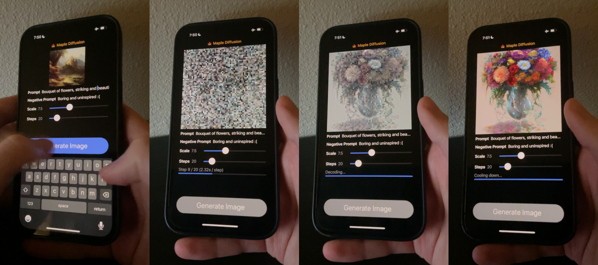

I got Stable Diffusion running on my phone this weekend. Code is here.
Maple Diffusion is the second Stable-Diffusion-on-a-phone implementation I'm aware of (first place goes to Matt Waller), but it should be the fastest.
...at least, until someone figures out how to make this flag work.